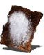

Descrição: Piromancia que internaliza o poder das chamas. Sua profusamente, recebendo menos dano de fogo.
Útil principalmente para enfrentar outros piromantes manipuladores de fogo. Só não leve para o lado pessoal os olhares que receber.
Localização:
Usos: 4
